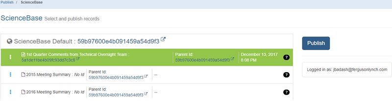

How To
Publishing
Best Practive: Always refresh your browser before you access the publishing menu to ensure that you are using the most updated version of mdEditor. However, if you have already moved items around in the publishing outline (see below for details), note that you will lose this information if you refresh.
Publishing Overview
Step 1: Login to ScienceBase
Step 2: Move Records in the Publishing Outline, as needed
Step 3: Submit for Publishing
Step 4: Review Records on ScienceBase
Step 5: Review Entries in the SA Science Catalog
Step 1: Login to ScienceBase
Click the Publish button on the banner menu in mdEditor.
You will be asked to select a publishing service. Click on ScienceBase.
A login window will appear on the right side of the screen. Log in options will appear, select Log in with BisonConnect. Then select Sign in with PIV Card and in the pop-up window select your certificate.
Finally, enter your PIV PIN ID number. You should be returned to the mdEditor window. and click Login.When you are logged in, the login window will display who you are logged in as. The current user must have read/write permissions on ScienceBase for any items to be published (including parent items). You cannot publish until you are logged in.
The mdEditor Publishing Outline:
You will see a list of every valid record in mdEditor in the publishing outline with its ScienceBase Identifier (if the record already exists on ScienceBase) and its parent ScienceBase Identifier (if present in the metadata). This publishing outline shows records in a parent-child relationship and reflects what you would see when you publish to ScienceBase.
Remember: Parent-Child relationships refer to how the records are organized and displayed on ScienceBase. This is different than the Project and Product associations identified within the metadata records.
- Records without parent IDs already in their metadata will appear directly under the ScienceBase header in the publishing outline. These records will be published under the default parent identifier you established in the settings. The Default parent identifier is listed in the ScienceBase header, which is hyperlinked to the record on ScienceBase.
- Records with parent IDs identified in their metadata will appear below a thick blue line and will be published under the parent ID listed in their metadata.

Items directly below the ScienceBase header will be published under the ScienceBase item identified in your settings as “Default Parent Identifier.” Items below the blue line will be published under the parent ID specified in the metadata.
For example, if the Default Parent Identifier is your SA Community, then projects at the root level in the publishing outline will be added directly under your SA Community. Products nested under a project in the outline will be added as a direct child item to the project item on ScienceBase. (Note: you may have other parent IDs identified in those records that are not loaded in mdEditor)
Notes on Moving Records
You can drag and drop records to establish the parent-child relationship in the publish outline, eliminating the need to establish that relationship in ScienceBase. This will also allow you to move items around (e.g., move a product from one project to another) and see that change reflected on ScienceBase. Remember, this only affects parent-child relationships on ScienceBase (i.e. file structure in ScienceBase), not project-product associations.
If you do not want these parent IDs to change, do not drag and drop these records in the publishing outline.
General Notes on Parent IDs:
- If you move a product under a different project, it will update that product’s parent ID.
- Parent IDs established through the relationships in the publishing outline will overwrite existing parent IDs in the metadata.
- Dragging and dropping a record onto the ScienceBase header at the top will set that record’s parent ID to the default parent ID you identified in Settings.
- If you have existing parent IDs in your metadata (and want to keep them as is), do not drag and drop those records onto the ScienceBase header– this will erase the existing parent ID and insert what you have set as the default parent identifier.
Step 2: Move Records in the Publishing Outline
Before you move records in the publishing outline please select your scenario below and follow the corresponding guidance.
Scenario A
You do not have items on ScienceBase yet, and your desired parent-child relationship is to have each product as a direct child of a project item on ScienceBase:
- Your records will all display under the ScienceBase header in the publishing outline.
- These items will be published as a direct child item under the SB item identified in your settings under “Default Parent Identifier.”
- You can drag and drop records in the publishing outline to establish parent-child relationships for ScienceBase.
- You can nest items in as many levels as you desire (the most common is a product nested under a project).
- To move a record back to the root level, drag and drop it on the top line that says “ScienceBase Default”.
Scenario B
You have existing parent-child relationships on ScienceBase and/or you have intermediate folder(s) between project items and products (i.e., products are not direct child items of Project Items - this is not recommended).
- If you have parent-child relationships already established on ScienceBase (and those IDs are reflected in the mdEditor records), you likely do not want to move the records around in the publishing outline.
- If your products are housed in a “Products” folder on ScienceBase (or other intermediate folders between the project item and the products), then your products will not be nested under projects in the publishing outline.
- The parent ID for those products is the “Products” folder (which would not have a record in mdEditor). If this is your situation, do not change the structure in the publishing outline and publish as is (i.e., with every item organized at the root level in the outline).
Step 3: Submit for Publishing
To select a record to publish, click on it and it will turn green (click again to un-select it).
You cannot publish a record without a parent ID. Sending a non-existent parent ID to ScienceBase will return an error. If your records contain parent IDs in the metadata, you can choose to publish products without publishing their associated projects at the same time.
mdEditor will publish your records sequentially, starting with the top record (it will publish the project first, then the products nested below it).
- If you are publishing to your default parent identifier or if you have changed any project-product relationships in the publishing outline, you will see the updated parent IDs appear in the outline as publishing occurs. If you’re publishing to the existing locations on ScienceBase, the IDs will not change.
- These new/updated IDs will be injected directly into the mdJSON file in mdEditor. However, these updated IDs will not be included in the mdJSON file that is attached to ScienceBase as part of the publishing process. You would have to publish the record a second time to update the mdJSON file attached on ScienceBase.
Upon successfully publishing to ScienceBase, the third column will display a date and time. The record’s ScienceBase ID will be displayed in the first column, and the Parent ID will be displayed in the second column. If there are any errors during publishing, they will be noted in the third column.
Step 4: Review Records on ScienceBase
- Once publishing is done, refresh ScienceBase to ensure everything is showing up how you expected it would show up.
- SB items should have an mdJSON and XML file attached
- SB items should be in the location reflected in the mdEditor publishing outline
- You can re-publish records as needed (e.g., after updating or correcting metadata).
Step 5: Review Entries in the SA Science Catalog
The Science Catalog updates overnight so you should review newly-published records the day after you publish to ScienceBase. This will be one of your best quality control checks.